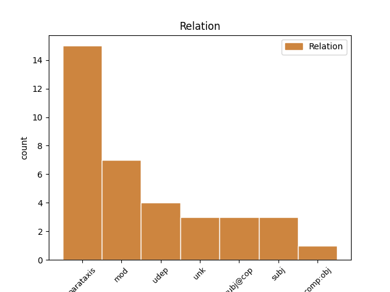
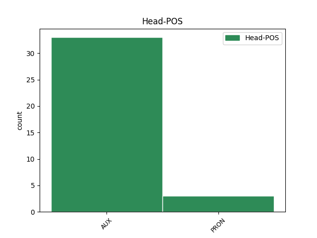
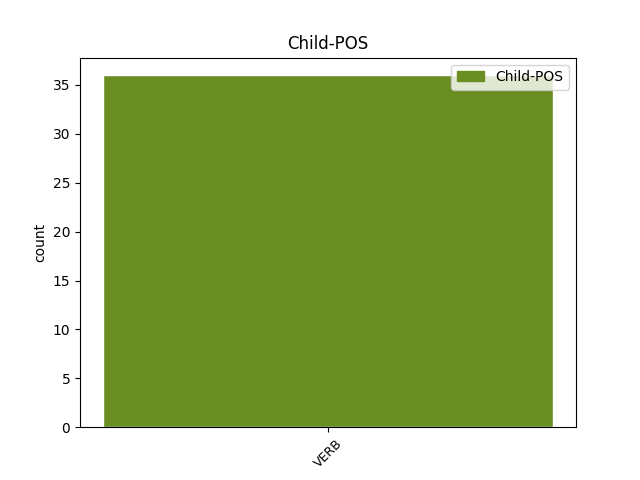

Distribution of features within this leaf



Agreement Rules sorted by frequency.
- When the dependent token is the parataxis(parataxis) of the head token, and the head token is AUX and the dependent token is VERB.
1 ב _ _ _ _ 0 _ _ _
2 ראשל"ץ _ _ _ _ 0 _ _ _
3 היו _ AUX AUX Gender=Fem,Masc|Number=Plur|Person=3|Polarity=Pos|Tense=Past|VerbType=Cop 0 _ _ _
4 כולם _ _ _ _ 0 _ _ _
5 ב _ _ _ _ 0 _ _ _
6 מיטב_ _ _ _ _ 0 _ _ _
7 _של_ _ _ _ _ 0 _ _ _
8 _הם _ _ _ _ 0 _ _ _
9 : _ _ _ _ 0 _ _ _
10 ארבעה _ _ _ _ 0 _ _ _
11 שחקנים _ _ _ _ 0 _ _ _
12 קלעו קלע VERB VERB Gender=Fem,Masc|HebBinyan=PAAL|Number=Plur|Person=3|Tense=Past|Voice=Act 3 parataxis _ _
13 נהדר _ _ _ _ 0 _ _ _
14 ( _ _ _ _ 0 _ _ _
15 זלוטיקמן _ _ _ _ 0 _ _ _
16 18 _ _ _ _ 0 _ _ _
17 , _ _ _ _ 0 _ _ _
18 ספנסר _ _ _ _ 0 _ _ _
19 19 _ _ _ _ 0 _ _ _
20 , _ _ _ _ 0 _ _ _
21 בנקס _ _ _ _ 0 _ _ _
22 24 _ _ _ _ 0 _ _ _
23 , _ _ _ _ 0 _ _ _
24 ברקוביץ _ _ _ _ 0 _ _ _
25 28 _ _ _ _ 0 _ _ _
26 ) _ _ _ _ 0 _ _ _
27 ו _ _ _ _ 0 _ _ _
28 ה _ _ _ _ 0 _ _ _
29 רכז _ _ _ _ 0 _ _ _
30 בוסאני _ _ _ _ 0 _ _ _
31 ניווט _ _ _ _ 0 _ _ _
32 כהלכה _ _ _ _ 0 _ _ _
33 את _ _ _ _ 0 _ _ _
34 קבוצה_ _ _ _ _ 0 _ _ _
35 _של_ _ _ _ _ 0 _ _ _
36 _הוא _ _ _ _ 0 _ _ _
37 ו _ _ _ _ 0 _ _ _
38 הוסיף _ _ _ _ 0 _ _ _
39 12 _ _ _ _ 0 _ _ _
40 נקודות _ _ _ _ 0 _ _ _
41 ( _ _ _ _ 0 _ _ _
42 שלוש _ _ _ _ 0 _ _ _
43 שלשות _ _ _ _ 0 _ _ _
44 ) _ _ _ _ 0 _ _ _
45 . _ _ _ _ 0 _ _ _
1 עקב _ _ _ _ 0 _ _ _
2 העדר _ _ _ _ 0 _ _ _
3 תכנון _ _ _ _ 0 _ _ _
4 ב _ _ _ _ 0 _ _ _
5 ה_ _ _ _ _ 0 _ _ _
6 פועל _ _ _ _ 0 _ _ _
7 , _ _ _ _ 0 _ _ _
8 אין _ _ _ _ 0 _ _ _
9 ה _ _ _ _ 0 _ _ _
10 מועצה _ _ _ _ 0 _ _ _
11 מסוגלת מסוגל AUX AUX Gender=Fem|Number=Sing|Person=1,2,3|VerbType=Mod 0 _ _ _
12 לדעת _ _ _ _ 0 _ _ _
13 ל _ _ _ _ 0 _ _ _
14 איזה _ _ _ _ 0 _ _ _
15 כמות _ _ _ _ 0 _ _ _
16 פטם _ _ _ _ 0 _ _ _
17 מיועדת יועד VERB VERB Gender=Fem|HebBinyan=PUAL|Number=Sing|Person=1,2,3|VerbForm=Part|Voice=Pass 11 mod _ _
18 ה _ _ _ _ 0 _ _ _
19 סובסידיה _ _ _ _ 0 _ _ _
20 , _ _ _ _ 0 _ _ _
21 ה _ _ _ _ 0 _ _ _
22 מסתכמת _ _ _ _ 0 _ _ _
23 ב _ _ _ _ 0 _ _ _
24 יותר _ _ _ _ 0 _ _ _
25 מ _ _ _ _ 0 _ _ _
26 05 _ _ _ _ 0 _ _ _
27 מיליון _ _ _ _ 0 _ _ _
28 ש"ח _ _ _ _ 0 _ _ _
29 ב _ _ _ _ 0 _ _ _
30 שנה _ _ _ _ 0 _ _ _
31 . _ _ _ _ 0 _ _ _
1 ל _ _ _ _ 0 _ _ _
2 דוגמה _ _ _ _ 0 _ _ _
3 , _ _ _ _ 0 _ _ _
4 אם _ _ _ _ 0 _ _ _
5 ב _ _ _ _ 0 _ _ _
6 תוכנית _ _ _ _ 0 _ _ _
7 רגילה _ _ _ _ 0 _ _ _
8 יכול _ AUX AUX Gender=Masc|Number=Sing|Person=1,2,3|VerbForm=Part|VerbType=Mod 0 _ _ _
9 ה _ _ _ _ 0 _ _ _
10 חוסך חסך VERB VERB Gender=Masc|HebBinyan=PAAL|Number=Sing|Person=1,2,3|VerbForm=Part|Voice=Act 8 subj _ _
11 לצאת _ _ _ _ 0 _ _ _
12 מן _ _ _ _ 0 _ _ _
13 ה _ _ _ _ 0 _ _ _
14 תוכנית _ _ _ _ 0 _ _ _
15 כעבור _ _ _ _ 0 _ _ _
16 שנתיים _ _ _ _ 0 _ _ _
17 , _ _ _ _ 0 _ _ _
18 כאשר _ _ _ _ 0 _ _ _
19 ה _ _ _ _ 0 _ _ _
20 בנק _ _ _ _ 0 _ _ _
21 משלם _ _ _ _ 0 _ _ _
22 ל_ _ _ _ _ 0 _ _ _
23 _הוא _ _ _ _ 0 _ _ _
24 59 _ _ _ _ 0 _ _ _
25 % _ _ _ _ 0 _ _ _
26 מן _ _ _ _ 0 _ _ _
27 ה _ _ _ _ 0 _ _ _
28 ריבית _ _ _ _ 0 _ _ _
29 ו _ _ _ _ 0 _ _ _
30 ה _ _ _ _ 0 _ _ _
31 הצמדה _ _ _ _ 0 _ _ _
32 ש _ _ _ _ 0 _ _ _
33 נצברו _ _ _ _ 0 _ _ _
34 ב _ _ _ _ 0 _ _ _
35 ה_ _ _ _ _ 0 _ _ _
36 תכנית _ _ _ _ 0 _ _ _
37 " _ _ _ _ 0 _ _ _
38 המשך _ _ _ _ 0 _ _ _
39 " _ _ _ _ 0 _ _ _
40 הוא _ _ _ _ 0 _ _ _
41 רשאי _ _ _ _ 0 _ _ _
42 לצאת _ _ _ _ 0 _ _ _
43 עם _ _ _ _ 0 _ _ _
44 נזק _ _ _ _ 0 _ _ _
45 כ _ _ _ _ 0 _ _ _
46 נ"ל _ _ _ _ 0 _ _ _
47 כבר _ _ _ _ 0 _ _ _
48 אחרי _ _ _ _ 0 _ _ _
49 שנה _ _ _ _ 0 _ _ _
50 אחת _ _ _ _ 0 _ _ _
51 ; _ _ _ _ 0 _ _ _
52 אם _ _ _ _ 0 _ _ _
53 ב _ _ _ _ 0 _ _ _
54 ה_ _ _ _ _ 0 _ _ _
55 תוכנית _ _ _ _ 0 _ _ _
56 ה _ _ _ _ 0 _ _ _
57 רגילה _ _ _ _ 0 _ _ _
58 יקבל _ _ _ _ 0 _ _ _
59 ה _ _ _ _ 0 _ _ _
60 חוסך _ _ _ _ 0 _ _ _
61 ריבית _ _ _ _ 0 _ _ _
62 שנתית _ _ _ _ 0 _ _ _
63 ב _ _ _ _ 0 _ _ _
64 שיעור _ _ _ _ 0 _ _ _
65 של _ _ _ _ 0 _ _ _
66 אחוז _ _ _ _ 0 _ _ _
67 שלם _ _ _ _ 0 _ _ _
68 ( _ _ _ _ 0 _ _ _
69 ו _ _ _ _ 0 _ _ _
70 לא _ _ _ _ 0 _ _ _
71 חצי _ _ _ _ 0 _ _ _
72 אחוז _ _ _ _ 0 _ _ _
73 , _ _ _ _ 0 _ _ _
74 כפי _ _ _ _ 0 _ _ _
75 ש _ _ _ _ 0 _ _ _
76 הבינה _ _ _ _ 0 _ _ _
77 ה _ _ _ _ 0 _ _ _
78 חוסכת _ _ _ _ 0 _ _ _
79 ב _ _ _ _ 0 _ _ _
80 טעות _ _ _ _ 0 _ _ _
81 ) _ _ _ _ 0 _ _ _
82 לאחר _ _ _ _ 0 _ _ _
83 ש _ _ _ _ 0 _ _ _
84 יתמיד _ _ _ _ 0 _ _ _
85 ב _ _ _ _ 0 _ _ _
86 ה_ _ _ _ _ 0 _ _ _
87 חיסכון _ _ _ _ 0 _ _ _
88 שלוש _ _ _ _ 0 _ _ _
89 שנים _ _ _ _ 0 _ _ _
90 חוסך _ _ _ _ 0 _ _ _
91 ב _ _ _ _ 0 _ _ _
92 תוכנית _ _ _ _ 0 _ _ _
93 המשך _ _ _ _ 0 _ _ _
94 יתעשר _ _ _ _ 0 _ _ _
95 ב _ _ _ _ 0 _ _ _
96 אחוז _ _ _ _ 0 _ _ _
97 אחד _ _ _ _ 0 _ _ _
98 ל _ _ _ _ 0 _ _ _
99 שנה _ _ _ _ 0 _ _ _
100 כבר _ _ _ _ 0 _ _ _
101 אחרי _ _ _ _ 0 _ _ _
102 שנתיים _ _ _ _ 0 _ _ _
103 . _ _ _ _ 0 _ _ _
1 כולם _ _ _ _ 0 _ _ _
2 פנו פנה VERB VERB Gender=Fem,Masc|HebBinyan=PAAL|Number=Plur|Person=3|Tense=Past|Voice=Act 6 subj@cop _ _
3 ל_ _ _ _ _ 0 _ _ _
4 _הוא _ _ _ _ 0 _ _ _
5 עורף _ _ _ _ 0 _ _ _
6 הוא הוא AUX AUX Gender=Masc|Number=Sing|Person=3|Polarity=Pos|VerbForm=Part|VerbType=Cop 0 _ _ _
7 שם _ _ _ _ 0 _ _ _
8 אחד _ _ _ _ 0 _ _ _
9 מ _ _ _ _ 0 _ _ _
10 סיפור_ _ _ _ _ 0 _ _ _
11 _של_ _ _ _ _ 0 _ _ _
12 _הוא _ _ _ _ 0 _ _ _
13 ה _ _ _ _ 0 _ _ _
14 קצרים _ _ _ _ 0 _ _ _
15 . _ _ _ _ 0 _ _ _
1 שאלה _ _ _ _ 0 _ _ _
2 זו _ _ _ _ 0 _ _ _
3 עלולה עלול AUX AUX Gender=Fem|Number=Sing|Person=1,2,3|VerbType=Mod 0 _ _ _
4 להישמע _ _ _ _ 0 _ _ _
5 מופרכת הופרך VERB VERB Gender=Fem|HebBinyan=HUFAL|Number=Sing|Person=1,2,3|VerbForm=Part|Voice=Pass 3 udep _ SpaceAfter=No
6 , _ _ _ _ 0 _ _ _
7 ו _ _ _ _ 0 _ _ _
8 לפיכך _ _ _ _ 0 _ _ _
9 אעיר _ _ _ _ 0 _ _ _
10 כאן _ _ _ _ 0 _ _ _
11 הערה _ _ _ _ 0 _ _ _
12 ש _ _ _ _ 0 _ _ _
13 אינה _ _ _ _ 0 _ _ _
14 מ _ _ _ _ 0 _ _ _
15 מין _ _ _ _ 0 _ _ _
16 ה _ _ _ _ 0 _ _ _
17 עניין _ _ _ _ 0 _ _ _
18 . _ _ _ _ 0 _ _ _
1 אחת _ _ _ _ 0 _ _ _
2 מן_ _ _ _ _ 0 _ _ _
3 _הן _ _ _ _ 0 _ _ _
4 , _ _ _ _ 0 _ _ _
5 למשל _ _ _ _ 0 _ _ _
6 , _ _ _ _ 0 _ _ _
7 היא הוא AUX AUX Gender=Fem|Number=Sing|Person=3|Polarity=Pos|VerbForm=Part|VerbType=Cop 0 _ _ _
8 מדוע _ _ _ _ 0 _ _ _
9 החליט החליט VERB VERB Gender=Masc|HebBinyan=HIFIL|HebSource=ConvUncertainHead|Number=Sing|Person=3|Tense=Past|Voice=Act 7 unk _ _
10 ב _ _ _ _ 0 _ _ _
11 מחשבה _ _ _ _ 0 _ _ _
12 צלולה _ _ _ _ 0 _ _ _
13 לנהל _ _ _ _ 0 _ _ _
14 מו"ם _ _ _ _ 0 _ _ _
15 עם _ _ _ _ 0 _ _ _
16 אגודת _ _ _ _ 0 _ _ _
17 ישראל _ _ _ _ 0 _ _ _
18 , _ _ _ _ 0 _ _ _
19 למרות _ _ _ _ 0 _ _ _
20 ש _ _ _ _ 0 _ _ _
21 ידע _ _ _ _ 0 _ _ _
22 ש _ _ _ _ 0 _ _ _
23 זה _ _ _ _ 0 _ _ _
24 ישמש _ _ _ _ 0 _ _ _
25 קלף _ _ _ _ 0 _ _ _
26 מיקוח _ _ _ _ 0 _ _ _
27 ל _ _ _ _ 0 _ _ _
28 ה_ _ _ _ _ 0 _ _ _
29 אגודה _ _ _ _ 0 _ _ _
30 ו _ _ _ _ 0 _ _ _
31 יסייע _ _ _ _ 0 _ _ _
32 ל_ _ _ _ _ 0 _ _ _
33 _היא _ _ _ _ 0 _ _ _
34 להשיג _ _ _ _ 0 _ _ _
35 יותר _ _ _ _ 0 _ _ _
36 מ _ _ _ _ 0 _ _ _
37 ה _ _ _ _ 0 _ _ _
38 ליכוד _ _ _ _ 0 _ _ _
39 ב _ _ _ _ 0 _ _ _
40 עת _ _ _ _ 0 _ _ _
41 חתימת _ _ _ _ 0 _ _ _
42 ה _ _ _ _ 0 _ _ _
43 הסכם _ _ _ _ 0 _ _ _
44 . _ _ _ _ 0 _ _ _
Disagree Examples:
1 רוב _ _ _ _ 0 _ _ _
2 ה _ _ _ _ 0 _ _ _
3 באים _ _ _ _ 0 _ _ _
4 להספידו _ _ _ _ 0 _ _ _
5 את _ _ _ _ 0 _ _ _
6 _הוא _ _ _ _ 0 _ _ _
7 , _ _ _ _ 0 _ _ _
8 אני _ _ _ _ 0 _ _ _
9 מנחש ניחש VERB VERB Gender=Masc|HebBinyan=PIEL|Number=Sing|Person=1,2,3|VerbForm=Part|Voice=Act 12 parataxis _ SpaceAfter=No
10 , _ _ _ _ 0 _ _ _
11 לא _ _ _ _ 0 _ _ _
12 היו היה AUX AUX Gender=Fem,Masc|Number=Plur|Person=3|Polarity=Pos|Tense=Past|VerbType=Cop 0 _ _ _
13 מצביעים _ _ _ _ 0 _ _ _
14 עבור_ _ _ _ _ 0 _ _ _
15 _הוא _ _ _ _ 0 _ _ _
16 . _ _ _ _ 0 _ _ _
1 כך _ _ _ _ 0 _ _ _
2 או _ _ _ _ 0 _ _ _
3 כך _ _ _ _ 0 _ _ _
4 , _ _ _ _ 0 _ _ _
5 גם _ _ _ _ 0 _ _ _
6 מ _ _ _ _ 0 _ _ _
7 מקום _ _ _ _ 0 _ _ _
8 מושב_ _ _ _ _ 0 _ _ _
9 _של_ _ _ _ _ 0 _ _ _
10 _הוא _ _ _ _ 0 _ _ _
11 ה _ _ _ _ 0 _ _ _
12 נוכחי _ _ _ _ 0 _ _ _
13 , _ _ _ _ 0 _ _ _
14 ב _ _ _ _ 0 _ _ _
15 ה_ _ _ _ _ 0 _ _ _
16 שמים _ _ _ _ 0 _ _ _
17 או _ _ _ _ 0 _ _ _
18 ב _ _ _ _ 0 _ _ _
19 ה_ _ _ _ _ 0 _ _ _
20 שאול _ _ _ _ 0 _ _ _
21 , _ _ _ _ 0 _ _ _
22 הוא _ _ _ _ 0 _ _ _
23 יכול _ AUX AUX Gender=Masc|Number=Sing|Person=1,2,3|VerbForm=Part|VerbType=Mod 0 _ _ _
24 עכשיו _ _ _ _ 0 _ _ _
25 לומר _ _ _ _ 0 _ _ _
26 על _ _ _ _ 0 _ _ _
27 יוסי _ _ _ _ 0 _ _ _
28 שריד _ _ _ _ 0 _ _ _
29 כמו _ _ _ _ 0 _ _ _
30 מירון _ _ _ _ 0 _ _ _
31 בנבנישתי _ _ _ _ 0 _ _ _
32 לפני_ _ _ _ _ 0 _ _ _
33 _הוא _ _ _ _ 0 _ _ _
34 אמרתי אמר VERB VERB Gender=Fem,Masc|HebBinyan=PAAL|Number=Sing|Person=1|Tense=Past|Voice=Act 23 udep _ _
35 ל_ _ _ _ _ 0 _ _ _
36 _אתם _ _ _ _ 0 _ _ _
37 . _ _ _ _ 0 _ _ _
1 ו _ _ _ _ 0 _ _ _
2 ה _ _ _ _ 0 _ _ _
3 תשובה _ _ _ _ 0 _ _ _
4 ה _ _ _ _ 0 _ _ _
5 רצינית _ _ _ _ 0 _ _ _
6 מדי _ _ _ _ 0 _ _ _
7 תהיה היה AUX AUX Gender=Fem|Number=Sing|Person=3|Polarity=Pos|Tense=Fut|VerbType=Cop 0 _ _ _
8 , _ _ _ _ 0 _ _ _
9 ו _ _ _ _ 0 _ _ _
10 תכוון _ _ _ _ 0 _ _ _
11 ל _ _ _ _ 0 _ _ _
12 גוף_ _ _ _ _ 0 _ _ _
13 _של_ _ _ _ _ 0 _ _ _
14 _הם _ _ _ _ 0 _ _ _
15 של _ _ _ _ 0 _ _ _
16 כל _ _ _ _ 0 _ _ _
17 ה _ _ _ _ 0 _ _ _
18 פרסים _ _ _ _ 0 _ _ _
19 : _ _ _ _ 0 _ _ _
20 ה _ _ _ _ 0 _ _ _
21 רעיון _ _ _ _ 0 _ _ _
22 ש _ _ _ _ 0 _ _ _
23 קיים _ _ _ _ 0 _ _ _
24 דבר _ _ _ _ 0 _ _ _
25 כמו _ _ _ _ 0 _ _ _
26 " _ _ _ _ 0 _ _ _
27 ה _ _ _ _ 0 _ _ _
28 סופר _ _ _ _ 0 _ _ _
29 ה _ _ _ _ 0 _ _ _
30 גדול _ _ _ _ 0 _ _ _
31 ביותר _ _ _ _ 0 _ _ _
32 " _ _ _ _ 0 _ _ _
33 של _ _ _ _ 0 _ _ _
34 ספרות _ _ _ _ 0 _ _ _
35 לאומית _ _ _ _ 0 _ _ _
36 מופרך הופרך VERB VERB Gender=Masc|HebBinyan=HUFAL|Number=Sing|Person=1,2,3|VerbForm=Part|Voice=Pass 7 mod _ _
37 מ _ _ _ _ 0 _ _ _
38 עיקר_ _ _ _ _ 0 _ _ _
39 _של_ _ _ _ _ 0 _ _ _
40 _הוא _ _ _ _ 0 _ _ _
41 . _ _ _ _ 0 _ _ _
1 אבל _ _ _ _ 0 _ _ _
2 ה _ _ _ _ 0 _ _ _
3 זעם _ _ _ _ 0 _ _ _
4 לא _ _ _ _ 0 _ _ _
5 חלף _ _ _ _ 0 _ _ _
6 , _ _ _ _ 0 _ _ _
7 ו _ _ _ _ 0 _ _ _
8 הוא _ _ _ _ 0 _ _ _
9 מצא _ _ _ _ 0 _ _ _
10 עצמו עצמו PRON PRON Gender=Masc|Number=Sing|Person=3|PronType=Prs|Reflex=Yes 0 _ _ _
11 נודד נדד VERB VERB Gender=Masc|HebBinyan=PAAL|Number=Sing|Person=1,2,3|VerbForm=Part|Voice=Act 10 mod _ _
12 מ _ _ _ _ 0 _ _ _
13 צרפת _ _ _ _ 0 _ _ _
14 ל _ _ _ _ 0 _ _ _
15 איטליה _ _ _ _ 0 _ _ _
16 , _ _ _ _ 0 _ _ _
17 ל _ _ _ _ 0 _ _ _
18 שוויץ _ _ _ _ 0 _ _ _
19 , _ _ _ _ 0 _ _ _
20 ל _ _ _ _ 0 _ _ _
21 מערב _ _ _ _ 0 _ _ _
22 גרמניה _ _ _ _ 0 _ _ _
23 , _ _ _ _ 0 _ _ _
24 ו _ _ _ _ 0 _ _ _
25 לבסוף _ _ _ _ 0 _ _ _
26 , _ _ _ _ 0 _ _ _
27 ב _ _ _ _ 0 _ _ _
28 שלהי _ _ _ _ 0 _ _ _
29 8591 _ _ _ _ 0 _ _ _
30 ל _ _ _ _ 0 _ _ _
31 ישראל _ _ _ _ 0 _ _ _
32 . _ _ _ _ 0 _ _ _
1 הוא _ _ _ _ 0 _ _ _
2 מצא _ _ _ _ 0 _ _ _
3 עצמו עצמו PRON PRON Gender=Masc|Number=Sing|Person=3|PronType=Prs|Reflex=Yes 0 _ _ _
4 נסוג נסוג VERB VERB Gender=Masc|HebBinyan=NIFAL|Number=Sing|Person=1,2,3|VerbForm=Part|Voice=Mid 3 mod _ _
5 עשור _ _ _ _ 0 _ _ _
6 לאחור _ _ _ _ 0 _ _ _
7 , _ _ _ _ 0 _ _ _
8 ו _ _ _ _ 0 _ _ _
9 נאלץ _ _ _ _ 0 _ _ _
10 לשוב _ _ _ _ 0 _ _ _
11 ו _ _ _ _ 0 _ _ _
12 להתפרנס _ _ _ _ 0 _ _ _
13 מ _ _ _ _ 0 _ _ _
14 מלאכות _ _ _ _ 0 _ _ _
15 מזדמנות _ _ _ _ 0 _ _ _
16 . _ _ _ _ 0 _ _ _